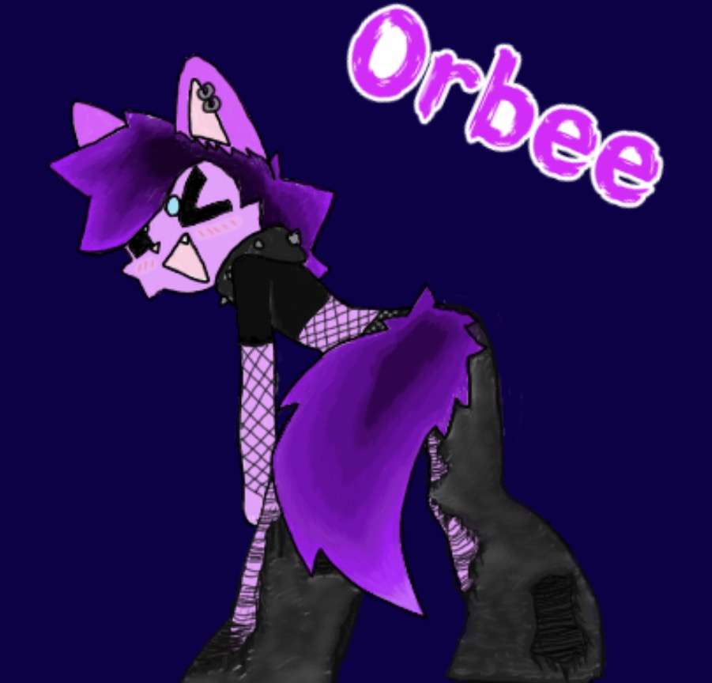

Welcome to the fungle!!
All the nonsense I want to save >:3
STALK ME: on the hub (github) on youtube or on soundcloud if ur like that
All the nonsense I want to save >:3
STALK ME: on the hub (github) on youtube or on soundcloud if ur like that
This is ma dude Orbee. I colored in an F2U base by UNKNOWNSPY. I've been wanting to make a sparkledog for a very long time, especially since I needed a new sona. When I realized I wanted their special think to be a purple accent color the rest came to me immediately. Their full name is Ourpl Fishgeral and they're a nerd who dresses like this website, maybe a little more emo. Anyways, enjoy my bad art.
